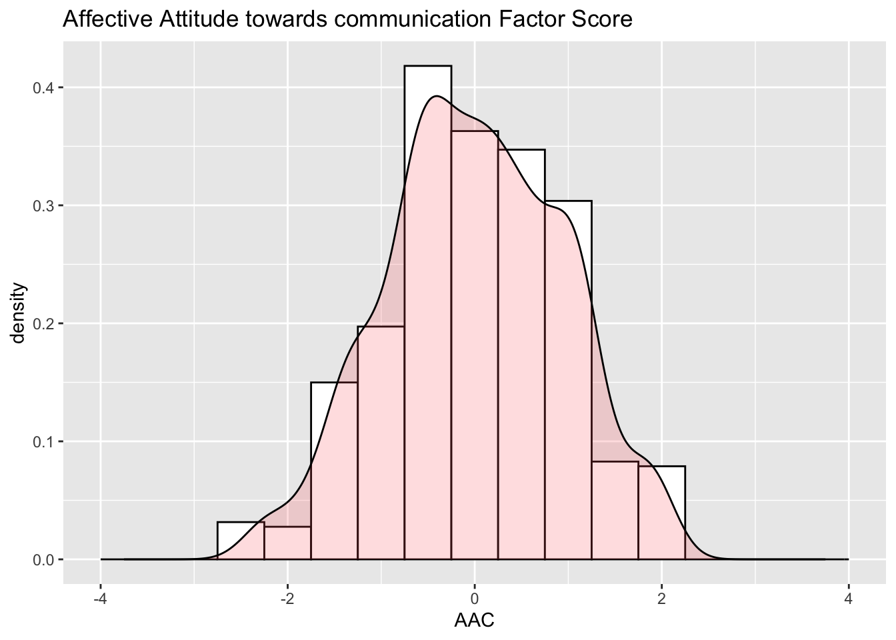
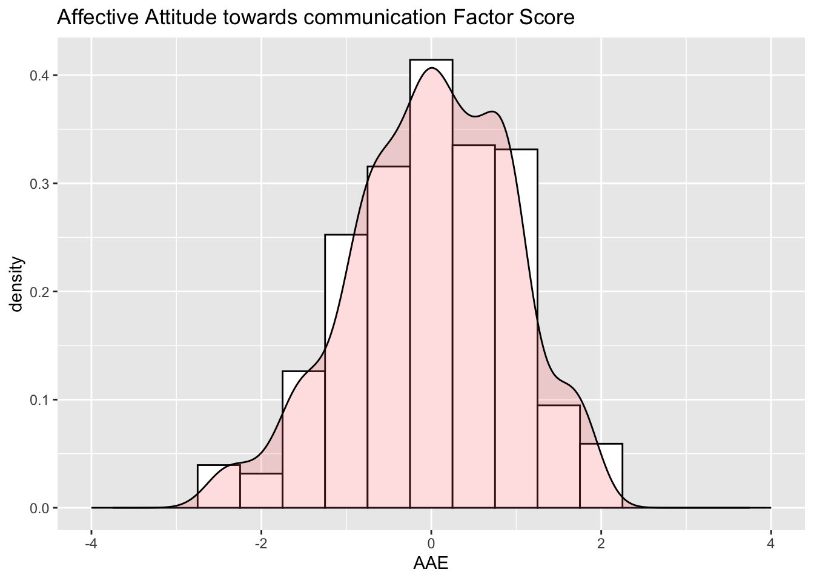
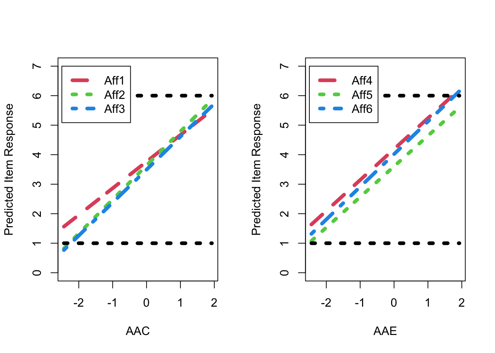

How to use Lavaan for Confirmatory Factor Analysis
This is one of my homework in Structural Equation Modeling in Fall 2017. Dr. Templin provided a excelent example showing how to perform Confirmatory Factor Analysis (CFA) using
LavaanPackage. I elaborated each step as following.
- First, load packages needed: If you don’t have the packages installed below, please use
install.packages()to install them.
library(tidyverse)
library(lavaan)
#library(semPlot)
library(psych)
library(knitr)
library(kableExtra)0. Background
CFA on Attitude towards Inclusive Education Survey (N = 507)
The affective dimension of attitudes subscale includes 6 items on a 6-point likert scale (1 = Strongly Agree, 6 = Strongly Disagree), measuring teachers’ feelings and emotions associated with inclusive education:
- I get frustrated when I have difficulty communicating with students with a disability.
- I get upset when students with a disability cannot keep up with the day-to-day curriculum in my classroom.
- I get irritated when I am unable to understand students with a disability.
- I am uncomfortable including students with a disability in a regular classroom with other students without a disability.
- I am disconcerted that students with a disability are included in the regular classroom, regardless of the severity of the disability.
- I get frustrated when I have to adapt the curriculum to meet the individual needs of all students.
The sample size (N) is 507, which includes 6 males and 501 females. I used one-factor model as first step. All items are loaded on one general factor - affective attitude towards inclusive education. Higher response score means more positive attitude towards inclusive education.
dat <- read.csv("AttitudeForInclusiveEducation.csv")
# head(dat)
dat2 <- dat %>% select(X,Aff.1:Aff.6)
colnames(dat2) <- c("PersonID", paste0("Aff",1:6))1. Descriptive Statistics
The descriptive statistics for all items are provided below. It appears that item 4 is the least difficult item as it has the highest mean (\mu = 4.189, sd = 1.317); item 5 is the most difficult item as it has lowest mean score (\mu = 3.604, sd = 1.423). All responses for each item range from 1 to 6 (1 = Strongly agree, 6 = Strongly disagree). Thus, all categories are responded. In term of item discrimination, as item 3 has the largest standard deviation (sd = 1.364) and item 6 has the smallest, item 3 has highest discrimination whearas item 6 has lowest in CTT.
| vars | n | mean | sd | median | trimmed | mad | min | max | range | skew | kurtosis | se | |
|---|---|---|---|---|---|---|---|---|---|---|---|---|---|
| PersonID | 1 | 507 | 254.000 | 146.503 | 254 | 254.000 | 188.290 | 1 | 507 | 506 | 0.000 | -1.207 | 6.506 |
| Aff1 | 2 | 507 | 3.765 | 1.337 | 4 | 3.779 | 1.483 | 1 | 6 | 5 | -0.131 | -0.927 | 0.059 |
| Aff2 | 3 | 507 | 3.635 | 1.335 | 4 | 3.636 | 1.483 | 1 | 6 | 5 | -0.026 | -0.963 | 0.059 |
| Aff3 | 4 | 507 | 3.493 | 1.364 | 3 | 3.472 | 1.483 | 1 | 6 | 5 | 0.124 | -0.969 | 0.061 |
| Aff4 | 5 | 507 | 4.189 | 1.317 | 4 | 4.287 | 1.483 | 1 | 6 | 5 | -0.589 | -0.327 | 0.058 |
| Aff5 | 6 | 507 | 3.604 | 1.423 | 4 | 3.590 | 1.483 | 1 | 6 | 5 | 0.000 | -0.939 | 0.063 |
| Aff6 | 7 | 507 | 4.018 | 1.313 | 4 | 4.061 | 1.483 | 1 | 6 | 5 | -0.356 | -0.733 | 0.058 |
Item-total correlation table was provided below. All item-total correlation coefficients are higher than 0.7, which suggests good internal consistence. Item 1 has lowest item-total correlation (r = 0.733, sd = 1.337).
| n | raw.r | std.r | r.cor | r.drop | mean | sd | |
|---|---|---|---|---|---|---|---|
| Aff1 | 507 | 0.733 | 0.735 | 0.652 | 0.611 | 3.765 | 1.337 |
| Aff2 | 507 | 0.835 | 0.836 | 0.806 | 0.753 | 3.635 | 1.335 |
| Aff3 | 507 | 0.813 | 0.812 | 0.771 | 0.718 | 3.493 | 1.364 |
| Aff4 | 507 | 0.789 | 0.790 | 0.742 | 0.689 | 4.189 | 1.317 |
| Aff5 | 507 | 0.774 | 0.769 | 0.702 | 0.658 | 3.604 | 1.423 |
| Aff6 | 507 | 0.836 | 0.838 | 0.805 | 0.755 | 4.018 | 1.313 |
Sample Correlation Matrix
According to Pearson Correlation Matrix below, we can see all items have fairly high pearson correlation coefficients ranging from 0.44 to 0.72. This provides the evidence of dimensionality. Item 2 and item 3 has highest correlation coefficient(r_{23} = 0.717). The lowest correlations lies between item 1 and item 4 as well as item 1 and item 5.
cor(dat2[2:7]) %>% round(3) %>% kable(caption = "Pearson Correlation Matrix")| Aff1 | Aff2 | Aff3 | Aff4 | Aff5 | Aff6 | |
|---|---|---|---|---|---|---|
| Aff1 | 1.000 | 0.590 | 0.525 | 0.448 | 0.411 | 0.538 |
| Aff2 | 0.590 | 1.000 | 0.717 | 0.534 | 0.553 | 0.602 |
| Aff3 | 0.525 | 0.717 | 1.000 | 0.505 | 0.527 | 0.608 |
| Aff4 | 0.448 | 0.534 | 0.505 | 1.000 | 0.609 | 0.682 |
| Aff5 | 0.411 | 0.553 | 0.527 | 0.609 | 1.000 | 0.577 |
| Aff6 | 0.538 | 0.602 | 0.608 | 0.682 | 0.577 | 1.000 |
Sample Mean and Variance
means <- dat2[,2:7] %>%
summarise_all(funs(mean)) %>% round(3) %>% t() %>% as.data.frame()Warning: `funs()` was deprecated in dplyr 0.8.0.
ℹ Please use a list of either functions or lambdas:
# Simple named list: list(mean = mean, median = median)
# Auto named with `tibble::lst()`: tibble::lst(mean, median)
# Using lambdas list(~ mean(., trim = .2), ~ median(., na.rm = TRUE))sds <- dat2[,2:7] %>%
summarise_all(funs(sd)) %>% round(3) %>% t() %>% as.data.frame()
table1 <- cbind(means,sds)
colnames(table1) <- c("Mean", "SD")
table1 Mean SD
Aff1 3.765 1.337
Aff2 3.635 1.335
Aff3 3.493 1.364
Aff4 4.189 1.317
Aff5 3.604 1.423
Aff6 4.018 1.313Sample Item Response Distributions
Those items did not exactly match normal distribution but acceptable.
# stack data
dat2_melted <- dat2 %>% gather(key, value,Aff1:Aff6) %>% arrange(PersonID)
# plot by variable
ggplot(dat2_melted, aes(value)) +
geom_histogram(aes(y=..density..), colour="black", fill="white", binwidth = 1) +
geom_density(alpha=.2, fill="#FF6666") +
scale_x_continuous(breaks = 1:6) +
facet_wrap(~ key)Warning: The dot-dot notation (`..density..`) was deprecated in ggplot2 3.4.0.
ℹ Please use `after_stat(density)` instead.
3. Estimation with CFA
One-factor Model
One-factor model was conducted as first step. The model has one latent facor - affective attitude and six indicators. In general, one-factor model does not provide great model fit except SRMR. The test statistics for chi-square is 75.835 (p < 0.05). CFI is 0.929, which larger than 0.95 suggests good model fit. RMSEA is 0.121, which lower than 0.05 suggest good model fit. SRMR is 0.04, which lower than 0.08. The standardized factor loadings range from 0.66 to 0.8. All factor loadings are significant at the level of alpha equals 0.05.
model1.syntax <- '
AA =~ Aff1 + Aff2 + Aff3 + Aff4 + Aff5 + Aff6
'
model1 <- cfa(model1.syntax, data = dat2,std.lv = TRUE, mimic = "mplus", estimator = "MLR")
summary(model1, fit.measures = TRUE, standardized = TRUE)lavaan 0.6.13 ended normally after 14 iterations
Estimator ML
Optimization method NLMINB
Number of model parameters 18
Number of observations 507
Number of missing patterns 1
Model Test User Model:
Standard Scaled
Test Statistic 115.410 75.834
Degrees of freedom 9 9
P-value (Chi-square) 0.000 0.000
Scaling correction factor 1.522
Yuan-Bentler correction (Mplus variant)
Model Test Baseline Model:
Test statistic 1573.730 960.267
Degrees of freedom 15 15
P-value 0.000 0.000
Scaling correction factor 1.639
User Model versus Baseline Model:
Comparative Fit Index (CFI) 0.932 0.929
Tucker-Lewis Index (TLI) 0.886 0.882
Robust Comparative Fit Index (CFI) 0.934
Robust Tucker-Lewis Index (TLI) 0.891
Loglikelihood and Information Criteria:
Loglikelihood user model (H0) -4492.146 -4492.146
Scaling correction factor 1.138
for the MLR correction
Loglikelihood unrestricted model (H1) -4434.440 -4434.440
Scaling correction factor 1.266
for the MLR correction
Akaike (AIC) 9020.291 9020.291
Bayesian (BIC) 9096.404 9096.404
Sample-size adjusted Bayesian (SABIC) 9039.270 9039.270
Root Mean Square Error of Approximation:
RMSEA 0.153 0.121
90 Percent confidence interval - lower 0.129 0.101
90 Percent confidence interval - upper 0.178 0.142
P-value H_0: RMSEA <= 0.050 0.000 0.000
P-value H_0: RMSEA >= 0.080 1.000 1.000
Robust RMSEA 0.149
90 Percent confidence interval - lower 0.120
90 Percent confidence interval - upper 0.181
P-value H_0: Robust RMSEA <= 0.050 0.000
P-value H_0: Robust RMSEA >= 0.080 1.000
Standardized Root Mean Square Residual:
SRMR 0.040 0.040
Parameter Estimates:
Standard errors Sandwich
Information bread Observed
Observed information based on Hessian
Latent Variables:
Estimate Std.Err z-value P(>|z|) Std.lv Std.all
AA =~
Aff1 0.886 0.055 16.183 0.000 0.886 0.663
Aff2 1.078 0.046 23.284 0.000 1.078 0.808
Aff3 1.066 0.055 19.499 0.000 1.066 0.783
Aff4 0.968 0.061 15.934 0.000 0.968 0.736
Aff5 1.004 0.055 18.291 0.000 1.004 0.706
Aff6 1.057 0.049 21.644 0.000 1.057 0.805
Intercepts:
Estimate Std.Err z-value P(>|z|) Std.lv Std.all
.Aff1 3.765 0.059 63.455 0.000 3.765 2.818
.Aff2 3.635 0.059 61.382 0.000 3.635 2.726
.Aff3 3.493 0.060 57.741 0.000 3.493 2.564
.Aff4 4.189 0.058 71.689 0.000 4.189 3.184
.Aff5 3.604 0.063 57.057 0.000 3.604 2.534
.Aff6 4.018 0.058 68.948 0.000 4.018 3.062
AA 0.000 0.000 0.000
Variances:
Estimate Std.Err z-value P(>|z|) Std.lv Std.all
.Aff1 1.000 0.081 12.285 0.000 1.000 0.560
.Aff2 0.617 0.066 9.283 0.000 0.617 0.347
.Aff3 0.719 0.089 8.089 0.000 0.719 0.387
.Aff4 0.794 0.095 8.390 0.000 0.794 0.459
.Aff5 1.014 0.090 11.226 0.000 1.014 0.501
.Aff6 0.605 0.068 8.898 0.000 0.605 0.351
AA 1.000 1.000 1.000Local Misfit for One-factor Model
By looking into local misfit with residual variance-covariance matrix we can get the clues to improve the model. According to the model residuals, item 4 has relatively high positive residual covariance with item 5 and item 6. It suggests that the one-factor model underestimates the correlations among item 4, item 5 and item 6. In other words, another latent factor may be needed to explain the strong relations among item 4, 5, 6 which cannot be explained by a general Affective attitude factor.
Moreover, modification indices below also suggest that adding the error covariances among item 4, 5 and 6 will improve chi-square much better.
Thus, I decided to add one more factor - AAE. AAE was labeled as affective attitude towards educational environment which indicated by item 4, 5, 6. The other latent factor - AAC which was indicated by item 1, 2, 3 was labeled as Affective Attitude towards communication.
resid(model1)$cov %>% kable(caption = "Normalized Residual Variance-Covariance Matrix",digits = 3)| Aff1 | Aff2 | Aff3 | Aff4 | Aff5 | Aff6 | |
|---|---|---|---|---|---|---|
| Aff1 | 0.000 | 0.095 | 0.011 | -0.070 | -0.109 | 0.006 |
| Aff2 | 0.095 | 0.000 | 0.153 | -0.106 | -0.034 | -0.085 |
| Aff3 | 0.011 | 0.153 | 0.000 | -0.128 | -0.051 | -0.041 |
| Aff4 | -0.070 | -0.106 | -0.128 | 0.000 | 0.168 | 0.155 |
| Aff5 | -0.109 | -0.034 | -0.051 | 0.168 | 0.000 | 0.015 |
| Aff6 | 0.006 | -0.085 | -0.041 | 0.155 | 0.015 | 0.000 |
modificationindices(model1, standardized = TRUE,sort. = TRUE) %>% slice(1:10) %>% kable(caption = "Modification Indices", digits = 3)| lhs | op | rhs | mi | epc | sepc.lv | sepc.all | sepc.nox |
|---|---|---|---|---|---|---|---|
| Aff2 | ~~ | Aff3 | 55.906 | 0.319 | 0.319 | 0.479 | 0.479 |
| Aff4 | ~~ | Aff6 | 45.674 | 0.279 | 0.279 | 0.403 | 0.403 |
| Aff4 | ~~ | Aff5 | 25.673 | 0.243 | 0.243 | 0.270 | 0.270 |
| Aff3 | ~~ | Aff4 | 24.228 | -0.214 | -0.214 | -0.283 | -0.283 |
| Aff2 | ~~ | Aff6 | 22.494 | -0.194 | -0.194 | -0.318 | -0.318 |
| Aff2 | ~~ | Aff4 | 21.303 | -0.193 | -0.193 | -0.276 | -0.276 |
| Aff1 | ~~ | Aff2 | 11.974 | 0.153 | 0.153 | 0.195 | 0.195 |
| Aff1 | ~~ | Aff5 | 7.918 | -0.145 | -0.145 | -0.144 | -0.144 |
| Aff1 | ~~ | Aff4 | 4.309 | -0.096 | -0.096 | -0.108 | -0.108 |
| Aff3 | ~~ | Aff6 | 4.018 | -0.084 | -0.084 | -0.128 | -0.128 |
Two-factor Model
The neccessity of adding another factor was tested by specifying a two-factor model.
In term of model fit indices, it appears that the global model fit indices are great with two-factor model (CFI = 0.986; RMSEA = 0.058; SRMR = 0.022). Ideally, two latent factors could be labeled as moderately correlated aspects of attitudes towards inclusive education. Thus, the first factor (AAC) could be labeled as how teachers feel about communicating with students with disability. The second (AAE) could be labeled as how teachers feel about evironment of inclusive education. All standardized factor loadings are statistically significant ranging from 0.676 to 0.865. The factor correlation between 2 factors is high (r = 0.838,p = 0.00).
model2.syntax <- '
AAC =~ Aff1 + Aff2 + Aff3
AAE =~ Aff4 + Aff5 + Aff6
'
model2 <- cfa(model2.syntax, data = dat2, std.lv = TRUE, mimic = "mplus", estimator = "MLR")
summary(model2, fit.measures = TRUE, standardized = TRUE)lavaan 0.6.13 ended normally after 19 iterations
Estimator ML
Optimization method NLMINB
Number of model parameters 19
Number of observations 507
Number of missing patterns 1
Model Test User Model:
Standard Scaled
Test Statistic 32.332 21.512
Degrees of freedom 8 8
P-value (Chi-square) 0.000 0.006
Scaling correction factor 1.503
Yuan-Bentler correction (Mplus variant)
Model Test Baseline Model:
Test statistic 1573.730 960.267
Degrees of freedom 15 15
P-value 0.000 0.000
Scaling correction factor 1.639
User Model versus Baseline Model:
Comparative Fit Index (CFI) 0.984 0.986
Tucker-Lewis Index (TLI) 0.971 0.973
Robust Comparative Fit Index (CFI) 0.987
Robust Tucker-Lewis Index (TLI) 0.975
Loglikelihood and Information Criteria:
Loglikelihood user model (H0) -4450.606 -4450.606
Scaling correction factor 1.166
for the MLR correction
Loglikelihood unrestricted model (H1) -4434.440 -4434.440
Scaling correction factor 1.266
for the MLR correction
Akaike (AIC) 8939.212 8939.212
Bayesian (BIC) 9019.554 9019.554
Sample-size adjusted Bayesian (SABIC) 8959.246 8959.246
Root Mean Square Error of Approximation:
RMSEA 0.077 0.058
90 Percent confidence interval - lower 0.051 0.034
90 Percent confidence interval - upper 0.106 0.082
P-value H_0: RMSEA <= 0.050 0.046 0.268
P-value H_0: RMSEA >= 0.080 0.475 0.068
Robust RMSEA 0.071
90 Percent confidence interval - lower 0.036
90 Percent confidence interval - upper 0.108
P-value H_0: Robust RMSEA <= 0.050 0.148
P-value H_0: Robust RMSEA >= 0.080 0.375
Standardized Root Mean Square Residual:
SRMR 0.022 0.022
Parameter Estimates:
Standard errors Sandwich
Information bread Observed
Observed information based on Hessian
Latent Variables:
Estimate Std.Err z-value P(>|z|) Std.lv Std.all
AAC =~
Aff1 0.903 0.055 16.357 0.000 0.903 0.676
Aff2 1.153 0.042 27.771 0.000 1.153 0.865
Aff3 1.117 0.051 22.079 0.000 1.117 0.820
AAE =~
Aff4 1.047 0.053 19.604 0.000 1.047 0.796
Aff5 1.036 0.053 19.366 0.000 1.036 0.728
Aff6 1.107 0.044 25.112 0.000 1.107 0.844
Covariances:
Estimate Std.Err z-value P(>|z|) Std.lv Std.all
AAC ~~
AAE 0.838 0.028 29.829 0.000 0.838 0.838
Intercepts:
Estimate Std.Err z-value P(>|z|) Std.lv Std.all
.Aff1 3.765 0.059 63.455 0.000 3.765 2.818
.Aff2 3.635 0.059 61.382 0.000 3.635 2.726
.Aff3 3.493 0.060 57.741 0.000 3.493 2.564
.Aff4 4.189 0.058 71.689 0.000 4.189 3.184
.Aff5 3.604 0.063 57.057 0.000 3.604 2.534
.Aff6 4.018 0.058 68.948 0.000 4.018 3.062
AAC 0.000 0.000 0.000
AAE 0.000 0.000 0.000
Variances:
Estimate Std.Err z-value P(>|z|) Std.lv Std.all
.Aff1 0.970 0.083 11.753 0.000 0.970 0.543
.Aff2 0.449 0.057 7.860 0.000 0.449 0.253
.Aff3 0.607 0.084 7.244 0.000 0.607 0.327
.Aff4 0.635 0.085 7.504 0.000 0.635 0.367
.Aff5 0.950 0.090 10.539 0.000 0.950 0.470
.Aff6 0.497 0.061 8.191 0.000 0.497 0.288
AAC 1.000 1.000 1.000
AAE 1.000 1.000 1.000Local Misfit for two-factor model
The local misfit indices for two-factor model also suggest that the model fits data well. The largest normalized residuals is 1.215. Modification indices suggest that add covariance between item 5 and item 6. These local misfit is not theoretically defensible. Thus, the final model is two-factor model.
resid(model2)$cov %>% kable(caption = "Normalized Residual Variance-Covariance Matrix",digits = 3)| Aff1 | Aff2 | Aff3 | Aff4 | Aff5 | Aff6 | |
|---|---|---|---|---|---|---|
| Aff1 | 0.000 | 0.010 | -0.053 | -0.005 | -0.003 | 0.105 |
| Aff2 | 0.010 | 0.000 | 0.014 | -0.075 | 0.048 | -0.016 |
| Aff3 | -0.053 | 0.014 | 0.000 | -0.076 | 0.050 | 0.049 |
| Aff4 | -0.005 | -0.075 | -0.076 | 0.000 | 0.056 | 0.019 |
| Aff5 | -0.003 | 0.048 | 0.050 | 0.056 | 0.000 | -0.070 |
| Aff6 | 0.105 | -0.016 | 0.049 | 0.019 | -0.070 | 0.000 |
modificationindices(model2, standardized = TRUE,sort. = TRUE) %>% slice(1:10) %>% kable(caption = "Modification Indices", digits = 3)| lhs | op | rhs | mi | epc | sepc.lv | sepc.all | sepc.nox |
|---|---|---|---|---|---|---|---|
| Aff5 | ~~ | Aff6 | 16.894 | -0.224 | -0.224 | -0.326 | -0.326 |
| AAC | =~ | Aff4 | 16.893 | -0.578 | -0.578 | -0.439 | -0.439 |
| Aff1 | ~~ | Aff6 | 7.064 | 0.108 | 0.108 | 0.155 | 0.155 |
| Aff4 | ~~ | Aff5 | 5.977 | 0.128 | 0.128 | 0.164 | 0.164 |
| AAC | =~ | Aff6 | 5.976 | 0.368 | 0.368 | 0.280 | 0.280 |
| Aff1 | ~~ | Aff3 | 5.093 | -0.112 | -0.112 | -0.146 | -0.146 |
| AAE | =~ | Aff2 | 5.093 | -0.362 | -0.362 | -0.272 | -0.272 |
| Aff3 | ~~ | Aff4 | 4.045 | -0.077 | -0.077 | -0.124 | -0.124 |
| Aff2 | ~~ | Aff3 | 3.160 | 0.119 | 0.119 | 0.228 | 0.228 |
| AAE | =~ | Aff1 | 3.160 | 0.236 | 0.236 | 0.176 | 0.176 |
4. Path Diagrams
#semPlot::semPaths(model2, what = "est")5. Reliability
To get the estimates of reliabilities, Omega coefficients were calculated for each factor(\Omega_{AAC} = 0.832, p < 0.01; \Omega_{AAE} = 0.830, p < 0.01).
model03SyntaxOmega = "
# AAC loadings (all estimated)
AAC =~ L1*Aff1 + L2*Aff2 + L3*Aff3
# AAE loadings (all estimated)
AAE =~ L4*Aff4 + L5*Aff5 + L6*Aff6
# Unique Variances:
Aff1 ~~ E1*Aff1; Aff2 ~~ E2*Aff2; Aff3 ~~ E3*Aff3; Aff4 ~~ E4*Aff4; Aff5 ~~ E5*Aff5; Aff6 ~~ E6*Aff6;
# Calculate Omega Reliability for Sum Scores:
OmegaAAC := ((L1 + L2 + L3)^2) / ( ((L1 + L2 + L3)^2) + E1 + E2 + E3)
OmegaAAE := ((L4 + L5 + L6)^2) / ( ((L4 + L5 + L6)^2) + E4 + E5 + E6)
"
model03EstimatesOmega = sem(model = model03SyntaxOmega, data = dat2, estimator = "MLR", mimic = "mplus", std.lv = TRUE)
summary(model03EstimatesOmega, fit.measures = FALSE, rsquare = FALSE, standardized = FALSE, header = FALSE)
Parameter Estimates:
Standard errors Sandwich
Information bread Observed
Observed information based on Hessian
Latent Variables:
Estimate Std.Err z-value P(>|z|)
AAC =~
Aff1 (L1) 0.903 0.055 16.357 0.000
Aff2 (L2) 1.153 0.042 27.771 0.000
Aff3 (L3) 1.117 0.051 22.079 0.000
AAE =~
Aff4 (L4) 1.047 0.053 19.604 0.000
Aff5 (L5) 1.036 0.053 19.366 0.000
Aff6 (L6) 1.107 0.044 25.112 0.000
Covariances:
Estimate Std.Err z-value P(>|z|)
AAC ~~
AAE 0.838 0.028 29.829 0.000
Intercepts:
Estimate Std.Err z-value P(>|z|)
.Aff1 3.765 0.059 63.455 0.000
.Aff2 3.635 0.059 61.382 0.000
.Aff3 3.493 0.060 57.741 0.000
.Aff4 4.189 0.058 71.689 0.000
.Aff5 3.604 0.063 57.057 0.000
.Aff6 4.018 0.058 68.948 0.000
AAC 0.000
AAE 0.000
Variances:
Estimate Std.Err z-value P(>|z|)
.Aff1 (E1) 0.970 0.083 11.753 0.000
.Aff2 (E2) 0.449 0.057 7.860 0.000
.Aff3 (E3) 0.607 0.084 7.244 0.000
.Aff4 (E4) 0.635 0.085 7.504 0.000
.Aff5 (E5) 0.950 0.090 10.539 0.000
.Aff6 (E6) 0.497 0.061 8.191 0.000
AAC 1.000
AAE 1.000
Defined Parameters:
Estimate Std.Err z-value P(>|z|)
OmegaAAC 0.832 0.016 51.512 0.000
OmegaAAE 0.830 0.017 49.000 0.0006. Factor Scores and Distributions
The AAC factor scores have an estimated mean of 0 with a variance of 0.88 due to the effect of the prior distribution. The SE for each person’s AAC factor score is 0.347; 95% confidence interval for AAC factor score is Score \pm 2*0.347 = Score \pm 0.694. The AAE factor scores have an estimated mean of 0 with a variance of 0.881 due to the effect of the prior distribution. The SE for each person’s AAC factor score is 0.357; 95% confidence interval for AAC factor score is Score \pm 2*0.357 = Score \pm 0.714.
Factor Realiability for AAC is 0.892 and factor realibility for AAE is 0.887. Both factor reliability are larger than omega.
The resulting distribution of the EAP estimates of factor score as shown in Figure 1. Figure 2 shows the predicted response for each item as a linear function of the latent factor based on the estimated model parameters. As shown, for AAE factor, the predicted item response goes above the highest response option just before a latent factor score of 2 (i.e., 2 SDs above the mean), resulting in a ceiling effect for AAE factor, as also shown in Figure 1.
The extent to which the items within each factor could be seen as exchangeable was then examined via an additional set of nested model comparisons, as reported in Table 1 (for fit) and Table 2 (for comparisons of fit). Two-factor has better model fit than one-facor model. Moreover, according to chi-square difference test, two-factor is significantly better than one-factor in model fit.
AAC AAE
0.8925361 0.8867031 7. Figures
Figure 1 : Factor Score Distribution
Warning: Removed 2 rows containing missing values (`geom_bar()`).
Warning: Removed 2 rows containing missing values (`geom_bar()`).
Figure 2 : Expected Item Response Plots

8. Tables
Table 1: Model Fit Statistics Using MLR
| # Items | # Parameters | Scaled Chi-Square | Chi-Square Scale Factor | DF | p-value | CFI | RMSEA | RMSEA Lower | RMSEA Upper | RMSEA p-value | |
|---|---|---|---|---|---|---|---|---|---|---|---|
| One-Factor | 6 | 18 | 75.834 | 1.522 | 9 | 0.000 | 0.927 | 0.9 | 0.000 | 0.05 | 1.000 |
| Two-Factor | 6 | 19 | 21.512 | 1.503 | 8 | 0.006 | 0.979 | 0.9 | 0.046 | 0.05 | 0.475 |
Table 2: Model Comparisons
| Df | Chisq diff | Df diff | Pr(>Chisq) | |
|---|---|---|---|---|
| One-Factor vs. Two-Factor | 9 | 49.652 | 1 | 0 |
Table 3: Model Estimates
| Estimate | SE | Estimate | |
|---|---|---|---|
| Forgiveness Factor Loadings | |||
| Item 1 | 0.903 | 0.055 | 0.676 |
| Item 2 | 1.153 | 0.042 | 0.865 |
| Item 3 | 1.117 | 0.051 | 0.820 |
| Not Unforgiveness Factor Loadings | |||
| Item 4 | 1.047 | 0.053 | 0.796 |
| Item 5 | 1.036 | 0.053 | 0.728 |
| Item 6 | 1.107 | 0.044 | 0.844 |
| Factor Covariance | |||
| Factor Covariance | 0.838 | 0.028 | 0.838 |
| Item Intercepts | |||
| Item 1 | 3.765 | 0.059 | 2.818 |
| Item 2 | 3.635 | 0.059 | 2.726 |
| Item 3 | 3.493 | 0.060 | 2.564 |
| Item 4 | 4.189 | 0.058 | 3.184 |
| Item 5 | 3.604 | 0.063 | 2.534 |
| Item 6 | 4.018 | 0.058 | 3.062 |
| Item Unique Variances | |||
| Item 1 | 0.970 | 0.083 | 0.543 |
| Item 2 | 0.449 | 0.057 | 0.253 |
| Item 3 | 0.607 | 0.084 | 0.327 |
| Item 4 | 0.635 | 0.085 | 0.367 |
| Item 5 | 0.950 | 0.090 | 0.470 |
| Item 6 | 0.497 | 0.061 | 0.288 |